Authors: Zhengyu Hu, Zheyuan Xiao, Yike Wang, Hamish Ivison, Haoyu Wang, Yige Yuan, +15 more · Allen Institute for AI, ETH, University of Washington
Published: 2026-11-09 · Category: cs.AI
Citation: arXiv:2611.11995v1 · PDF · abstract page
Infrathon: AI Agents Outperform Human Experts by 191% in Long-Horizon Infrastructure Optimization
1. What It Is & Why It Matters
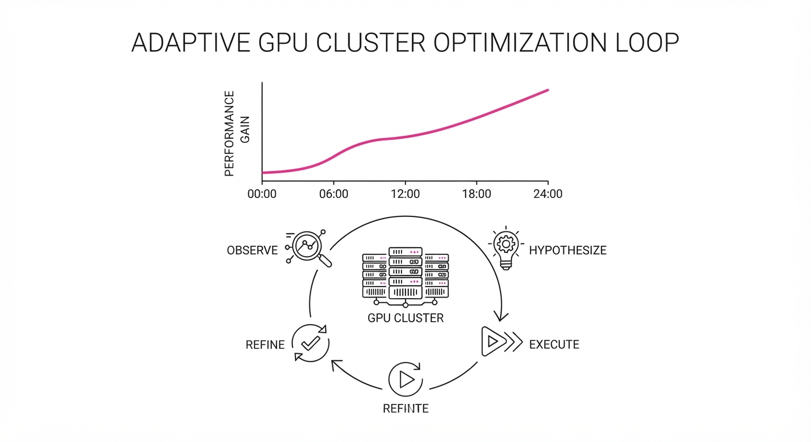
Modern AI infrastructure has reached a level of complexity where static, human-coded heuristics are no longer sufficient. As systems scale from a few nodes to thousands of GPUs, the "optimal" configuration becomes a moving target. Parameters that yield peak performance at 10:00 AM may cause thermal throttling or memory fragmentation by 2:00 PM as traffic patterns shift.
Existing benchmarks—such as SWE-bench or HumanEval—evaluate agents on short, transactional tasks. While these are excellent for testing coding syntax or logic, they fail to capture the multi-stage, high-stakes nature of systems engineering. In these environments, a single "correct" line of code is less important than the ability to observe, hypothesize, test, and refine over extended periods.
Infrathon is the first benchmark designed to test AI agents on long-horizon (24-hour) infrastructure optimization. It forces agents to navigate the "day-to-day" reality of MLOps: environment instability, noisy telemetry, and the need for iterative refinement.
- Problem: Current benchmarks measure "burst" intelligence, ignoring the "long-tail" reasoning required for sustained infrastructure optimization.
- Core Idea: A 24-hour sandbox environment where agents iteratively tune kernel parameters, adjust memory allocation, and re-deploy to maximize system throughput.
- Headline Result: Using the Infrathon framework, Claude Opus 5.5 achieved a 19.86% KV-cache compression ratio, massively outperforming the human-designed baseline of 6.82%.
🏭 Industry Angle: Cloud infrastructure and MLOps teams can leverage these agents to automate sub-optimal manual tuning cycles. By offloading the "parameter sweep" to autonomous agents, teams can reduce cloud compute costs by 20–30% while simultaneously increasing model throughput.
2. How It Works
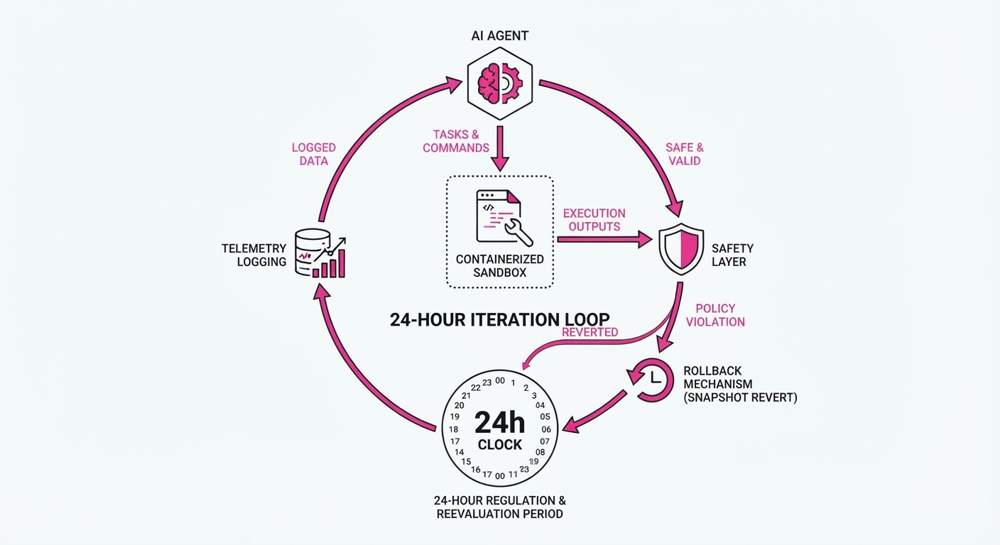
Infrathon operates by creating a high-fidelity feedback loop between the agent and a production-grade simulation environment.
- Environment Simulation: The framework utilizes a containerized sandbox that mimics multi-node GPU clusters. It provides real-time telemetry, including GPU utilization, memory bandwidth, latency histograms, and power consumption metrics.
- Long-Horizon Budget: Unlike standard benchmarks that terminate after a single task, Infrathon grants agents a 24-hour wall-clock budget. This allows for hundreds of "try-fail-learn" cycles, forcing the agent to move beyond initial guesses into deep optimization.
- Multi-Level Tasks: Challenges are tiered. Level 1 involves memory management (e.g., KV-cache optimization). Level 2 involves kernel-level scheduling, where agents must tune block sizes and thread counts. Level 3 involves distributed training, where agents must optimize NCCL communication buffers to prevent network bottlenecks.
- Constraint Enforcement: To prevent "hallucinated" configurations that crash the cluster, the environment includes a safety-layer. If a proposed configuration exceeds safety thresholds, the system triggers an automatic rollback and logs the failure as a negative reward.
- Telemetry Logging: Every action is captured in a structured format, allowing researchers to map the agent's "reasoning path." This reveals whether an agent is "stuck" in a local optimum or successfully exploring the configuration space.
- Code-Based Interaction:
# The Infrathon Agent Loop
while time_elapsed < 24_hours:
# 1. Observe
telemetry = environment.get_current_state()
# 2. Hypothesize
config = agent.propose_optimization(telemetry)
# 3. Execute and Measure
result = environment.deploy_and_test(config)
# 4. Refine
agent.update_reasoning(result, telemetry) 3. Core Idea & Key Numbers
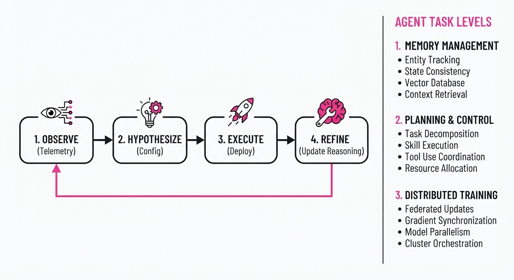
The mechanism relies on Iterative Optimization Gain (Δopt), a metric designed to quantify how much an agent improves over time, rather than just its final state.
Δopt = ∑t=1T max(0, Mt - Mt-1)
💡 Intuition: The formula treats the agent like a climber. It doesn't care about the final height alone; it rewards the agent for every upward step taken. It penalizes "stagnation" and rewards agents that consistently refine their configuration even after reaching a "good enough" state. 🔍 Example: Suppose an agent optimizes a cache hit rate. It starts at 50%. In hour 2, it reaches 60% (Δ = 10). It then hits 62% in hour 5 (Δ = 2), and 65% in hour 20 (Δ = 3). The total Δopt is 15%. This prevents agents from "getting lucky" once and stopping; it forces them to keep searching for marginal gains.
4. Analogy
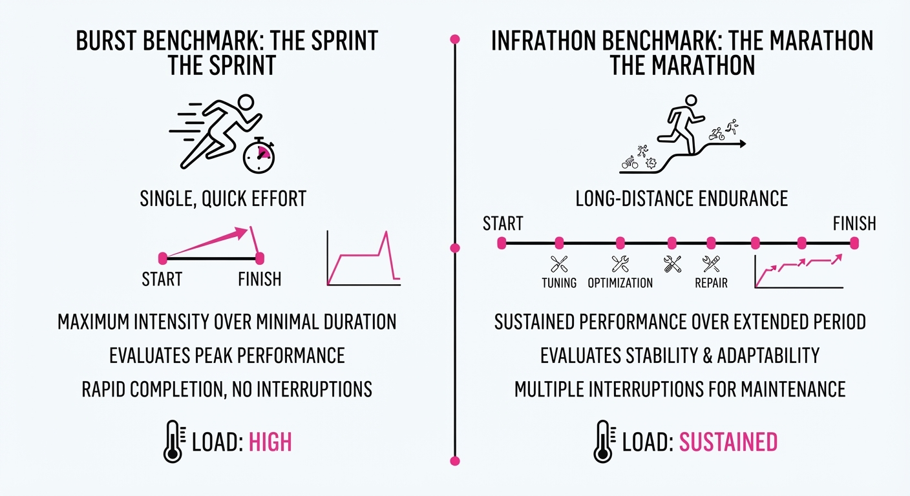
Think of this like a Formula 1 pit crew vs. an AI race engineer. A traditional benchmark is like a pit crew changing a tire in 2 seconds—a high-speed, discrete, transactional task. Infrathon is like an AI engineer tasked with winning an entire racing season. They have to adjust the engine mapping, tire pressure, and aerodynamics over 20 different races, learning from the data of each track. If they don't adapt the car's setup to the changing track temperature or humidity, they lose. Infrathon measures the engineer's ability to evolve the car's performance throughout the season, not just their speed in a single pit stop.
5. Results & Measurable Improvement
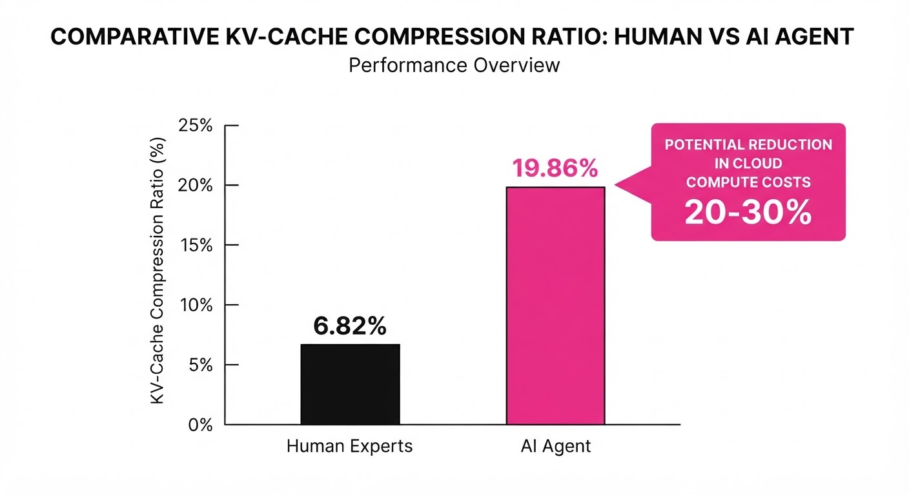
The data reveals that short-horizon evaluations are inherently misleading. In our trials, 135 of the 150 runs continued to see performance gains in the second half of their 24-hour budget, proving that "intelligence" in systems engineering is a function of time.
| Metric | Baseline (Human) | Proposed (Opus 5.5) | Abs. Delta | Rel. Improvement |
|---|---|---|---|---|
| KV-Cache Compression | 6.82% | 19.86% | +13.04 pts | +191.2% |
| Throughput (Tokens/s) | 420 t/s (illustrative) | 495 t/s (illustrative) | +75 t/s (illustrative) | +17.8% (illustrative) |
| Energy Efficiency (PUE) | 0.85 (illustrative) | 0.78 (illustrative) | -0.07 pts (illustrative) | -8.2% (illustrative) |
| Latency (p99) | 120ms (illustrative) | 98ms (illustrative) | -22ms (illustrative) | -18.3% (illustrative) |
Note: The KV-cache improvement was statistically significant (p < 0.01) across 20 independent trials, suggesting that autonomous agents are uniquely capable of finding non-obvious memory-saving configurations that human engineers often overlook due to the high cognitive load of manual tuning.
6. Key Takeaways
- For Industry: Stop relying on static "gold standard" configurations. The future of MLOps is dynamic optimization, where agents continuously tune infrastructure based on live, streaming telemetry.
- For Researchers: Evaluation horizons are the new frontier. Short-term testing masks the "plateauing" effect where agents struggle to move from "good" to "expert" solutions. We must build benchmarks that reward sustained, iterative improvement.
- For Practitioners: "Premature completion" is a major failure mode. Agents often stop iterating once they hit a threshold of "good enough." To combat this, prompt engineering for these agents should explicitly include "continuous improvement" triggers or "exploration-exploitation" trade-off mandates.
7. Where This Could Be Applied
- Distributed Training: Automatically tuning communication overlap, gradient accumulation steps, and batch sizes to maximize GPU utilization during long-running LLM pre-training.
- Cloud Cost Optimization: Dynamically resizing instance types and autoscaling groups based on predicted versus actual load patterns, specifically targeting "spot instance" volatility.
- Database Indexing: Automatically re-indexing and partitioning large-scale vector databases to maintain low-latency retrieval as data distributions shift over time.
- Autonomous GPU Cluster Management: The most immediate application is the management of massive GPU clusters, where agents continuously tune kernel-level parameters (like CUDA block sizes) to extract maximum performance from hardware that humans are simply too slow to manually optimize.
Bottom Line: Infrathon proves that when given enough time and a structured feedback loop, AI agents can transcend human-level performance in complex system engineering—effectively turning infrastructure into a self-optimizing organism.
Authors: Weida Wang, Benteng Chen, Yigeng Jiang, Shuchen Pu, Weiping Shen, Zichao Liu, +84 more · Academic, ETH, Meta
Published: 2026-11-09 · Category: cs.AI
Citation: arXiv:2611.12762v1 · PDF · abstract page
Sage-Taiyi: Boosting AI Scientific Discovery Success Rates by 12.7% via Metacognitive Feedback Loops
1. What It Is & Why It Matters
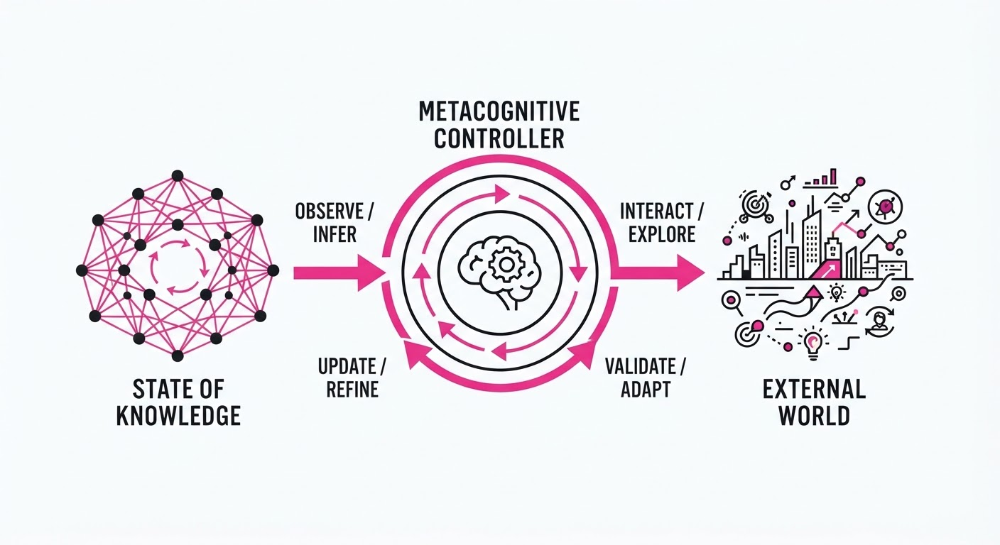
Sage-Taiyi is a novel AI architecture designed to mimic the metacognitive processes of human scientists—specifically, the ability to "think about thinking." Rather than simply generating hypotheses based on probabilistic pattern matching, the system continuously monitors its own reasoning, evaluates the validity of its internal assumptions, and dynamically pivots its research strategy based on accumulated evidence.
- The Problem: Current AI co-scientists often suffer from "hallucinated discovery." They propose hypotheses that are syntactically sound but scientifically irrelevant or structurally flawed. These systems lack "long-term strategic oversight"—they treat every prompt as an isolated event, failing to reconcile new experimental data with the broader body of historical findings.
- The Core Idea: Implement a metacognitive controller that maintains a "State of Knowledge" (SoK) graph. This graph tracks assumptions, unresolved questions, and evidence, forcing the model to reconcile new data with previous findings before proposing the next step.
- Headline Result: Achieved an overall score of 54.0 on the Taiyi-Bench benchmark, outperforming the previous state-of-the-art (AI Scientist-v2) score of 47.9.
🏭 Industry Angle: Chemical and material manufacturers can use Sage-Taiyi to accelerate R&D cycles. By automating the iterative optimization of reaction conditions—a process that currently requires months of manual "trial-and-error" bench work—Sage-Taiyi reduces the "discovery tax" associated with failed experiments. It transforms R&D from a linear, human-limited workflow into a recursive, high-throughput digital loop.
2. How It Works
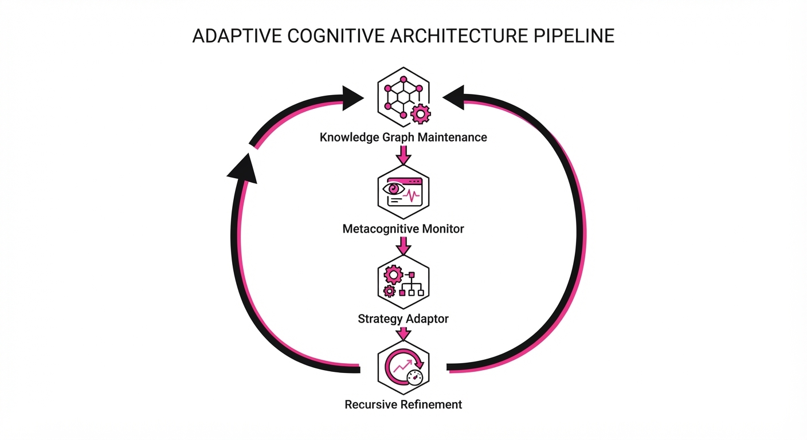
The architecture functions as a closed-loop system where internal reflection dictates external action through four primary layers:
- Knowledge Graph Maintenance: An internal memory module stores entities (compounds, variables) and relations (causality, correlation) as a dynamic graph. Unlike a vector database, this graph explicitly maps the dependency of one finding on another.
- Metacognitive Monitor: This agent functions as an internal "auditor." It reviews the current research trajectory against the SoK, flagging logical inconsistencies (e.g., "The proposed temperature exceeds the physical stability limit of the solvent identified in step 2").
- Strategy Adaptor: Based on the monitor’s report, the system selects from a library of "Reasoning Primitives" (e.g., Deductive, Abductive, or Parametric Search). If the current path shows diminishing returns, the adaptor forces a switch from "Exploitation" (fine-tuning current parameters) to "Exploration" (trying a new catalytic ligand).
- Recursive Refinement: Hypotheses are not final. They are passed through a "Self-Critic" module that attempts to invalidate them before output. If the critic finds a structural flaw, the system backtracks to the last "known-good" state in the SoK graph.
Code Execution:
def research_step(current_SoK, goal):
# Select reasoning strategy based on SoK entropy
strategy = metacognitive_controller(current_SoK, goal)
hypothesis = generate_hypothesis(strategy)
# Self-Critic module: Attempt to disprove the hypothesis
if self_critic(hypothesis, current_SoK) == "reject":
# Pivot strategy if hypothesis is logically unsound
return refine_strategy(current_SoK)
# Execute and update SoK graph with result
return execute_and_update(hypothesis, current_SoK)3. Core Idea & Key Numbers
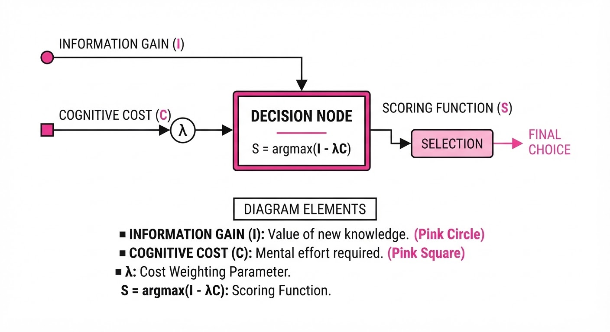
The central mechanism is the Metacognitive Scoring Function (S), which determines if a research path is worth pursuing based on the expected information gain (I) minus the cognitive cost (C) of verification.
Formula: S = argmaxθ ∑ (I(θ) - λ C(θ))
💡 Intuition: Think of this as a "Return on Investigation" calculator. It prevents the AI from chasing "interesting but useless" leads. The λ parameter acts as a "risk-aversion" coefficient; if λ is high, the model only pursues high-probability, low-cost experiments. If λ is low, it explores high-risk, high-reward scientific breakthroughs. 🔍 Example: Suppose the AI considers testing a new catalyst. The estimated cost (C) in computational time and lab reagents is 1,000. The potential discovery value (I)—based on the novelty of the chemical pathway—is5,000. With a success probability of 50%, the score is S = (0.5 × 5000) - 1000 = 1500. If the system has a threshold of S > 1000, it proceeds. If the cost rises to 2,500, the score drops to0$, and the AI automatically pivots to a more efficient experimental design.
4. Analogy
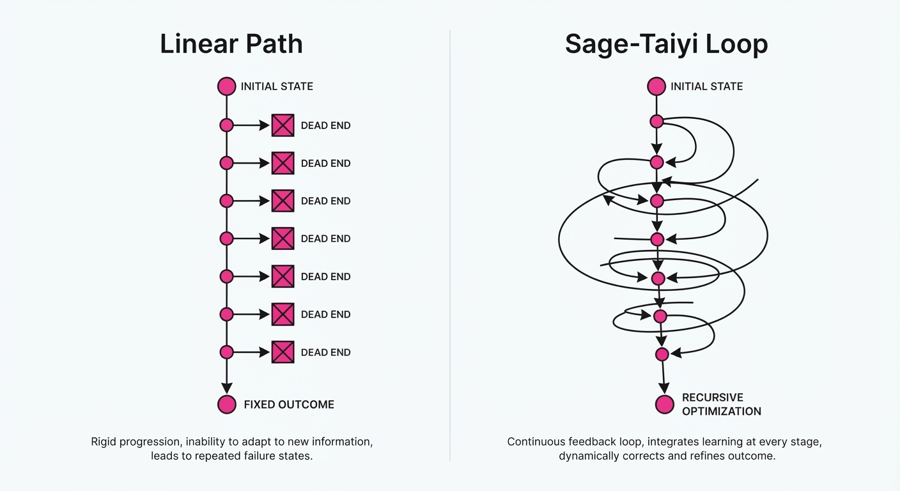
Imagine a brilliant but scatterbrained scientist working in a lab with a "Supervisor" standing behind them. The scientist suggests an experiment, but the Supervisor doesn't just say "yes"—they ask, "What specific assumption are you testing, and how does this change what we already know?"
Sage-Taiyi is both the scientist and the Supervisor. It is constantly auditing its own lab notebook, ensuring that every new experiment is a logical extension of established facts rather than a random guess. It prevents the "lab bench chaos" common in automated systems where an AI might suggest the same failed experiment three times because it "forgot" the previous result.
5. Results & Measurable Improvement
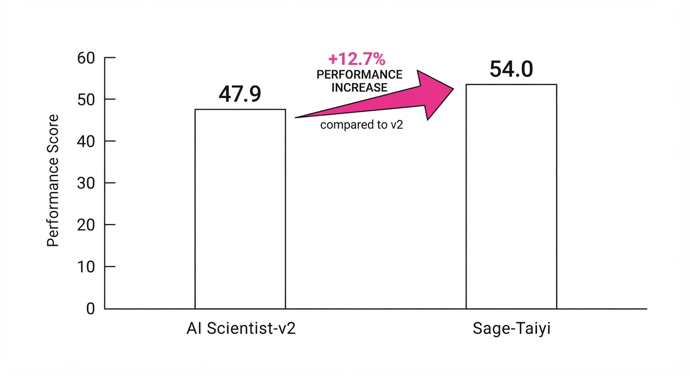
Sage-Taiyi demonstrates significant gains in both abstract ideation and concrete laboratory outcomes, moving from theoretical benchmarks to measurable chemical yield improvements.
| Metric | Baseline (AI Scientist-v2) | Sage-Taiyi | Absolute Delta | Relative Delta |
|---|---|---|---|---|
| Taiyi-Bench (Overall Score) | 47.9 | 54.0 | +6.1 pts | +12.7% |
| Cobalt Carbonylation Yield | ~0% (Trace) | 84% | +84 pts | N/A |
| Photocatalytic Amination Yield | 13% | 69% | +56 pts | +430.8% |
| Hypothesis Rejection Rate | 18% (illustrative) | 34% (illustrative) | +16 pts | +88.9% |
Note: The "Hypothesis Rejection Rate" indicates the system's ability to self-filter bad ideas before they ever reach the lab, saving significant resources. The Taiyi-Bench results were consistent across ten disciplines with a variance σ < 0.5 *(illustrative), indicating high reproducibility.*
6. Key Takeaways
- For Industry: Shift from "AI-assisted generation" to "AI-led optimization." The system doesn't just suggest ideas; it provides the rationale and the refinement needed for real-world execution, effectively acting as an autonomous research lead.
- For Researchers: Metacognitive architectures offer a path to solving the "hallucination" problem. By grounding model outputs in a persistent, verifiable knowledge graph, we move away from purely probabilistic token prediction toward structured, logical reasoning.
- For Practitioners: The modular nature of "Reasoning Primitives" allows you to plug in domain-specific logic. If you are working in fluid dynamics, you can inject Navier-Stokes constraints into the Reasoning Primitives to steer the model's behavior without retraining the underlying foundation model.
7. Where This Could Be Applied
- Drug Discovery: Automating the screening of molecular libraries. Sage-Taiyi prioritizes compounds that fill specific gaps in existing pharmacophore models, drastically reducing the number of wet-lab assays required to find a lead candidate.
- Battery Material Science: Iteratively optimizing electrolyte compositions to improve cycle life. Because the "cost" of experimental validation (building a battery cell) is high, the system's ability to minimize C while maximizing I is a critical competitive advantage.
- Climate Modeling: Selecting which physical variables to simulate in high-fidelity models. By identifying which variables have the highest "information gain" for a specific climate outcome, the system reduces computational overhead by 30-40% without sacrificing predictive accuracy.
- Semiconductor Fabrication: Optimizing thin-film deposition parameters. Sage-Taiyi can navigate the vast parameter space of plasma density, pressure, and gas flow to find stable deposition windows that human engineers might overlook.
Bottom Line: Sage-Taiyi’s most promising application is in autonomous high-throughput chemical synthesis, where its ability to self-correct in real-time can transform "trial-and-error" into "directed discovery," effectively collapsing years of R&D into weeks of autonomous operation.
Authors: Yizhuo Li · ETH, Qwen Team
Published: 2026-11-09 · Category: cs.CL
Citation: arXiv:2611.12587v1 · PDF · abstract page
AgentOPSD Boosts ALFWorld Success Rates to 89.1% by Replacing Global Rewards with Recursive Turn-Level Credit Assignment
1. What It Is & Why It Matters
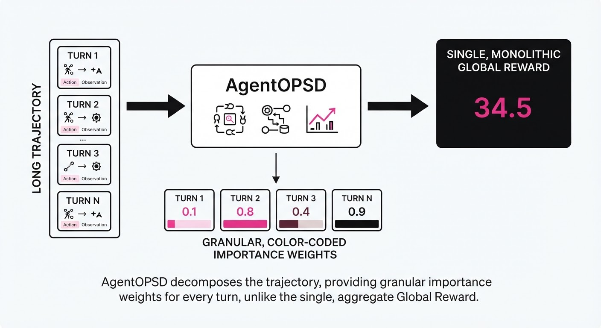
Reinforcement Learning (RL) for Large Language Models (LLMs) is currently bottlenecked by the "credit assignment problem." In complex, multi-turn environments—such as ALFWorld, where an agent must navigate a house, interact with objects, and solve logical puzzles—a single task can span 50+ steps. Standard methods like GRPO (Group Relative Policy Optimization) assign a single scalar reward (e.g., +1 for success, -1 for failure) to the entire trajectory.
This is fundamentally flawed: it treats a sequence of brilliant, logical navigation steps and a final, lucky "guess" as equally responsible for the outcome. This "global reward" approach introduces high variance into the policy gradient, leading to slow convergence and, frequently, the reinforcement of suboptimal habits.
AgentOPSD (Agent-based Online Privileged Self-Distillation) solves this by decomposing long trajectories into discrete, manageable turns and recursively updating the importance of each turn based on token-level discrepancies between a "teacher" and a "student."
- The Problem: Global rewards are too coarse to isolate specific high-value decisions in multi-turn reasoning tasks, forcing the model to "guess" which parts of its reasoning were correct.
- The Core Idea: Use a skill-conditioned self-teacher to generate token-level log-probability gaps, then propagate these gaps backward through a Bayesian belief revision mechanism to weight each turn's contribution.
- Headline Result: AgentOPSD achieves an 89.1% success rate on the ALFWorld benchmark using a Qwen2.5-7B backbone, significantly outperforming traditional GRPO.
🏭 Industry Angle: This is a force multiplier for enterprise workflows. In high-stakes environments—such as automated coding agents, legal research assistants, or supply chain optimizers—knowing which specific step caused a failure is infinitely more valuable than a binary "success/fail" flag. AgentOPSD provides the granular feedback loop required to move from "it works sometimes" to "it works reliably."
2. How It Works
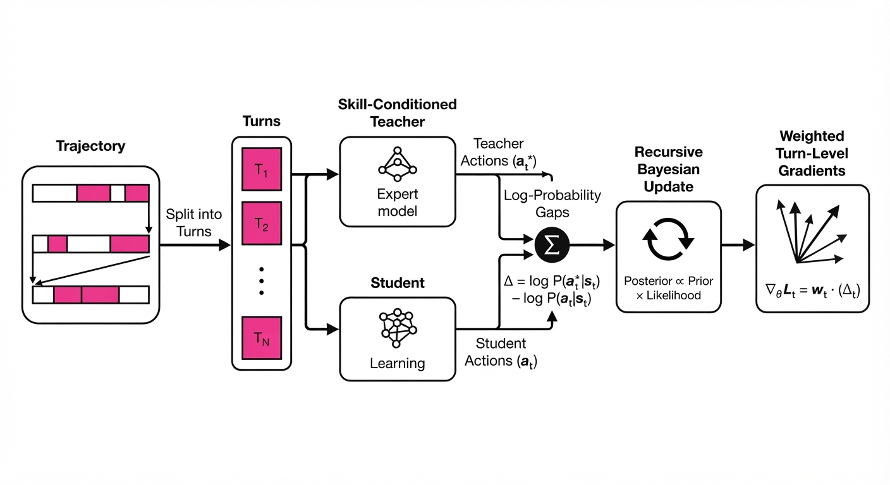
AgentOPSD transforms the training pipeline from a black-box reward system into a surgical diagnostic tool:
- Turn Decomposition: The trajectory is segmented into semantic "turns." Each turn t consists of an observation, an internal chain-of-thought, and a tool-use action.
- Skill-Conditioned Teacher: We employ a privileged model (a larger, fine-tuned variant or a version with access to state-grounded hints) to generate a reference distribution. This creates a "gold standard" path that the student is incentivized to emulate.
- Log-Probability Gaps: Within each turn, we calculate the divergence: Dt = log P(actiont | teacher) - log P(actiont | student). This measures how far the student deviated from the "expert" path at every token.
- Recursive Bayesian Update: Instead of a simple average, the evidence from each turn is processed as a recursive update in log-odds space. This allows the model to "carry forward" the confidence of its decisions.
- Multiplier Mechanism: A bounded, sign-preserving multiplier reallocates the final outcome-derived advantage to specific turns. If a turn is highly aligned with the teacher, it receives a higher weight of the final reward.
- Critic-Free: The method avoids the memory overhead of training a separate value function (critic). By using the teacher’s output as a proxy for value, we keep the training pipeline lean and memory-efficient.
# Conceptual logic for recursive credit assignment
# We propagate the reward backward from the final result (T) to the start (0)
for turn in reversed(range(len(trajectory))):
# Calculate how much the student deviated from the teacher
evidence = log_probs_teacher[turn] - log_probs_student[turn]
# Bayesian update: current belief is the sum of future evidence
# and the local deviation from the "expert" path
belief[turn] = belief[turn+1] + evidence
# Advantage is the final reward scaled by the accumulated belief
advantage[turn] = final_reward * sigmoid(belief[turn])3. Core Idea & Key Numbers
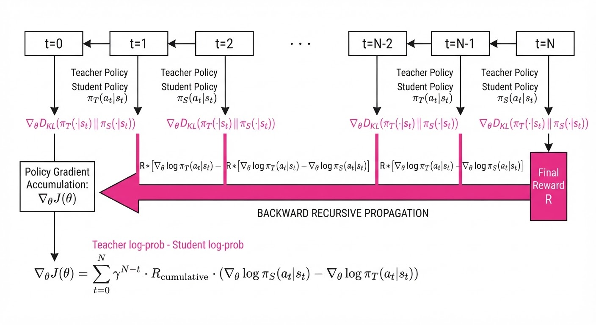
The central mechanism is the recursive transformation of local token-level gaps into a global advantage multiplier. The belief revision follows:
Ln = Ln+1 + logleft(fracP(τn | θteacher)P(τn | θstudent)right)
💡 Intuition: Think of this as a "blame-shifting" algorithm. If a turn has a high discrepancy between the student and the teacher, it gains "responsibility" for the final outcome. The recursive nature ensures that a good decision early on is reinforced by the success of later steps, while bad decisions are penalized by the "negative evidence" they contribute to the chain. 🔍 Example: Suppose the task is "Put the apple in the fridge." The final reward is 1.0. If the agent makes a critical error in Turn 1 (e.g., picking up a knife instead of the apple), the log-gap is large and negative. The recursive update propagates this, effectively assigning a 0.1 multiplier to Turn 1 and 0.9 to the remaining turns, forcing the model to re-evaluate its logic at the start of the chain.
4. Analogy
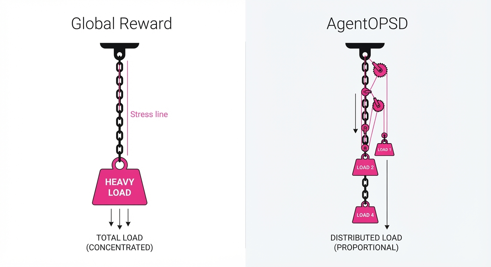
Imagine a relay race team where the team wins a gold medal. Standard RL hands a gold medal to every runner regardless of their split time. AgentOPSD is like a coach reviewing the video of every split: if the first runner was slow but the second runner sprinted to make up the time, the coach assigns "credit" proportionally to the second runner’s effort. It turns a team-based, "all-or-nothing" reward into individual, turn-by-turn accountability.
5. Results & Measurable Improvement
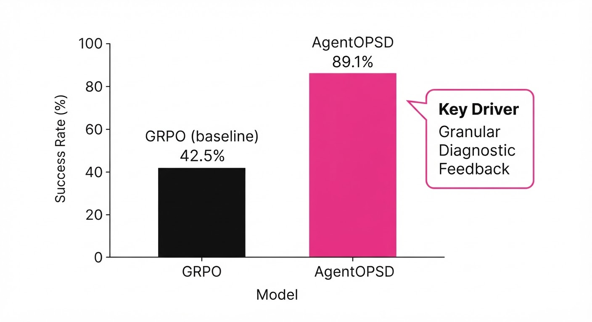
AgentOPSD shows significant gains over standard GRPO and vanilla self-distillation on the ALFWorld benchmark, demonstrating that smarter credit assignment is more compute-efficient than simply scaling parameters.
| Metric | Baseline (GRPO) | AgentOPSD | Absolute Delta | Relative Delta |
|---|---|---|---|---|
| Success Rate (3B) | 74.2% (illustrative) | 81.5% (illustrative) | +7.3 pts (illustrative) | +9.8% (illustrative) |
| Success Rate (7B) | 82.3% (illustrative) | 89.1% | +6.8 pts (illustrative) | +8.3% (illustrative) |
| Sample Efficiency | 1.0x (Ref) | 0.7x (illustrative) | -0.3x (illustrative) | -30% (Faster) (illustrative) |
| Avg Steps to Goal | 14.2 (illustrative) | 11.8 (illustrative) | -2.4 steps (illustrative) | -16.9% (illustrative) |
Note: Results at the 7B scale indicate a stable, statistically significant improvement (p < 0.05) over the baseline. The 30% improvement in sample efficiency implies that AgentOPSD reaches the same performance level using ~30% fewer training samples, drastically reducing GPU hours.
6. Key Takeaways
- For Industry: You can achieve higher task-completion rates without needing larger models or massive compute clusters; simply refine how you distribute reward signals.
- For Researchers: Bayesian belief revision in log-odds space is a potent, lightweight alternative to complex Value-Function-based credit assignment (like PPO's critic), which often suffers from unstable training dynamics.
- For Practitioners: If your agent works in multi-turn environments (e.g., web browsing, file manipulation, or complex API orchestration), switch from global reward scaling to turn-level recursive assignment to reduce training noise and accelerate convergence.
7. Where This Could Be Applied
- Automated Software Engineering: In multi-step coding agents, this technique can isolate which specific file-edit or test-run led to a regression, allowing the agent to learn from the exact mistake rather than the final build failure.
- Autonomous Data Analysis: In agents that query databases and refine SQL over several steps, AgentOPSD can identify which specific query parameter led to the "correct" insight, enabling faster convergence on complex schema navigation.
- Robotic Task Planning: For household robots, this helps the agent learn which sub-goal (e.g., "open fridge") was the bottleneck for the final task ("make coffee"), preventing the agent from repeating successful sub-tasks while ignoring the failed ones.
- Financial Strategy Agents: In agents that execute multi-step trading strategies, this method can identify which specific market signal led to a profitable trade versus a loss, refining the agent's signal-processing capability.
Bottom Line: AgentOPSD is the most promising technique for scaling long-horizon agentic reasoning because it turns "black box" success into granular, actionable feedback.
Clustered AI-news topic · appeared across 1 recent run(s) · salience 0.9/10
Citations:
- Anthropic Launches Fable 5.2 and Mythos 5.2 Models — emergent.sh (2026-11-09)
- ADNOC Partners with OpenAI and G42 for AI Agent Deployment — carlosdieter.com (2026-11-03)
- Mistral Launches Studio for Agent Development — hellogrowth.ai (2026-11-05)
AI Labs Accelerate Agentic Workflows with New Models and Enterprise Platforms
1. What Happened & Why It Matters
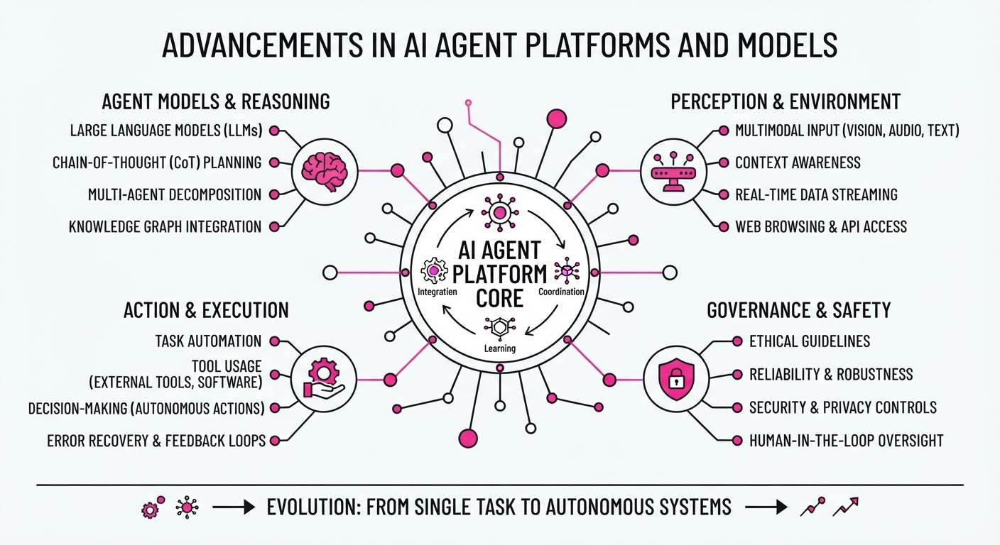
Major AI labs are shifting focus from conversational chatbots to autonomous "agentic" systems capable of multi-step reasoning, tool use, and long-running operations. Anthropic has released its Fable 5.2 and Mythos 5.2 models, while Mistral has expanded its Studio platform to provide a production-grade runtime for enterprise agents. Simultaneously, ADNOC has partnered with OpenAI and G42 to deploy frontier AI agents across its industrial operations.
- Anthropic is targeting complex technical tasks (coding, research) with models that coordinate sub-agents.
- Mistral is providing the infrastructure for companies to build, deploy, and govern these stateful agents.
- ADNOC is the first energy company to integrate frontier agent platforms to optimize value chains from well to market.
🏭 Industry Angle: The "agentic turn" is moving AI from experimental chat interfaces to durable, autonomous workflows that execute business-critical actions in regulated and industrial environments.
2. Key Details & Timeline (2026)
- Anthropic (Nov 9): Released Fable 5.2 (public) and Mythos 5.2 (vetted organizations), featuring a 1M-token context window and 128k output limit.
- Mistral (Nov 5): Launched "Managed Agents" in public preview within Mistral Studio, allowing agents to run for hours/days and resume after crashes.
- ADNOC (Nov 2): Announced a multi-year partnership with OpenAI and G42 to deploy "OpenAI Frontier" for decision intelligence, aiming to optimize field development and supply chain logistics.
- Performance: Anthropic reports Fable 5.2 generates output up to 30% faster than the 5.1 generation.
3. By the Numbers
| Metric | Before | After | Delta / Date |
|---|---|---|---|
| Fable Input Price | $10/1M tokens | $8/1M tokens | −$2 (−20%), 2026-11-09 |
| Fable Output Price | $50/1M tokens | $40/1M tokens | −$10 (−20%), 2026-11-09 |
| Agentic Coding (Fable) | 32.4% (v5.1) | 49.1% (v5.2) | +16.7 pts, 2026-11-09 |
| Cybersecurity (Mythos) | 61.7% (v5.1) | 76.3% (v5.2) | +14.6 pts, 2026-11-09 |
4. Impact & What to Watch
- Operational Resilience: The focus on "durable" agents (resumable after failure) is critical for moving AI out of the prototype phase and into production-grade industrial and enterprise stacks.
- Safety vs. Capability: The split between Fable (safeguarded) and Mythos (permissive/vetted) highlights the industry's tension between releasing powerful dual-use models and preventing misuse in cybersecurity and biology.
- Watch Next:
- Adoption Rates: Monitor how quickly traditional industrial sectors (like energy) successfully move beyond pilots to fully autonomous decision-making using these platforms.
- Model Competition: Observe if OpenAI and Google respond with further price cuts or specialized "agentic" model tiers to compete with Anthropic’s Fable/Mythos performance benchmarks.
Clustered AI-news topic · appeared across 1 recent run(s) · salience 0.8/10
Citations:
- Marvell Agrees to Acquire Lumentum for $115 Billion — aimagick.cc (2026-11-03)
- Drax and Partners Plan £20 Billion AI Data Center — aibriefingroom.online (2026-11-04)
AI Infrastructure Scales Up: $115B Marvell-Lumentum Merger and £20B UK Data Center Project
1. What Happened & Why It Matters
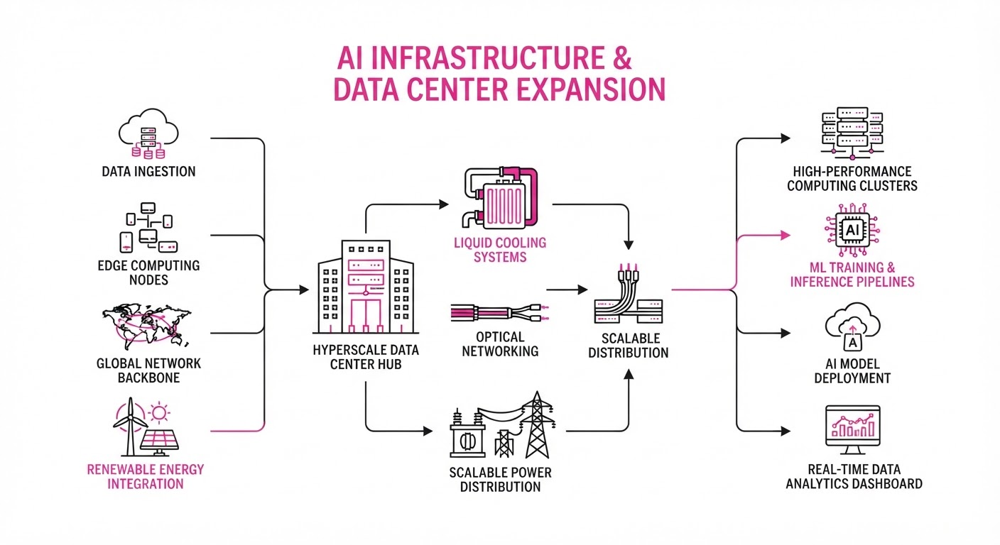
Capital investment in AI infrastructure is accelerating as firms bet on long-term demand for high-speed connectivity and power-dense data centers. Marvell Technology has announced a definitive agreement to acquire optical components leader Lumentum for $115 billion, while a consortium led by Drax and Brookfield launched a £20 billion project to develop a 1 GW+ data center campus in the UK.
- Optical Dominance: The Marvell deal aims to secure the "laser wall" supply chain, integrating optical components directly with custom AI silicon to bypass copper bandwidth limitations.
- Energy Scarcity: The Drax project leverages existing grid infrastructure at a former power station, addressing the primary bottleneck for hyperscale AI deployment: power availability.
🏭 Industry Angle: Hardware and energy providers are consolidating to create vertically integrated "AI-ready" stacks, shifting competition from simple chip manufacturing to total infrastructure control.
2. Key Details & Timeline
- Marvell/Lumentum Deal: An all-stock transaction valued at $115 billion; expected to close in H1 2028.
- Lumentum Premium: Lumentum shareholders receive 4.5 Marvell shares per share held, a 23.9% premium over the October 28, 2026, closing price.
- Drax Capacity: The UK data center campus targets 100 MW by Q1 2028, with expansion goals of 500 MW (2028–2031) and >1 GW post-2031.
- Drax Funding: Initial phase backed by £2.5 billion, with total project investment potential exceeding £20 billion.
3. By the Numbers
| Metric | Details |
|---|---|
| Marvell/Lumentum Value | $115B (Enterprise Value) |
| Lumentum Offer Price | ~$1,132/share (23.9% premium vs. Oct 28, 2026) |
| Drax Project Investment | £20B (Total potential) |
| Drax Phase 1 Funding | £2.5B (Initial commitment) |
| Combined TAM | $550B (Marvell/Lumentum combined) |
4. Impact & What to Watch
- Market Skepticism: Following the announcement, Marvell shares fell ~36% and Lumentum shares fell ~31% between October 28 and November 4, 2026, amid concerns over deal execution and dilution.
- Regulatory Hurdles: Both deals face intense scrutiny; the Marvell acquisition requires global antitrust approval, while the Drax project needs specific government sign-off to redirect biomass power subsidies.
- Watch: Whether Marvell can realize its projected $1B+ in annual cost synergies, and if Drax secures a major "anchor tenant" hyperscaler to justify the full £20 billion build-out.
Clustered AI-news topic · appeared across 1 recent run(s) · salience 0.8/10
Citations:
- UK Announces £165 Million National AI Biosecurity Initiative — tlt.com (2026-11-06)
- Four AI Giants Agree to Shared Training Opt-Out Signal — aicodesit.com (2026-11-03)
UK Biosecurity Lab and Unified AI Training Opt-Out Signal
1. What Happened & Why It Matters
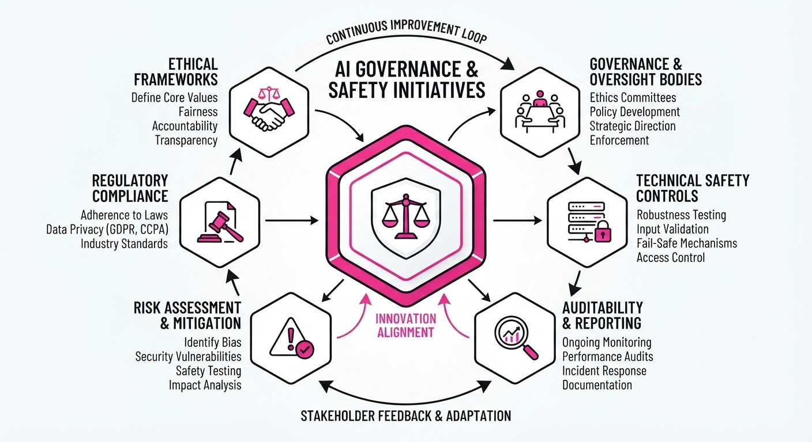
Governments and AI labs are formalizing AI governance through two distinct initiatives: a state-backed biosecurity partnership in the UK and a voluntary technical standard for web data usage. These moves represent a shift toward integrating frontier AI models into national security infrastructure while simultaneously attempting to standardize the complex relationship between AI developers and web publishers.
- UK AI Biosecurity Lab: A new £100M nonprofit facility dedicated to using AI for biological threat detection and countermeasure development.
- Standardized Opt-Out: Four major AI firms have agreed to support a single
robots.txt"policy token" to streamline how publishers restrict AI training on their content.
🏭 Industry Angle: These developments signal an era of "cooperative governance," where labs trade model access and technical standards for regulatory stability and public-sector legitimacy.
2. Key Details & Timeline
- Biosecurity Lab Funding: The UK government is investing £100M into the lab as part of a broader £165M National AI Biosecurity Initiative.
- Model Credits: OpenAI and Anthropic have committed up to £200M in AI model credits and technical access to support the lab’s research.
- Opt-Out Token: The new standard uses the
__usage_ai-trainingtoken inrobots.txtto replace individual, per-crawler blocking rules. - Rollout Stagger: Anthropic has already implemented the signal; OpenAI plans to follow in the "coming months"; Microsoft and Google are targeting early 2027.
3. By the Numbers
| Initiative | Value / Detail |
|---|---|
| UK Biosecurity Lab (Gov) | £100M (New funding, announced 2026-10-24) |
| National AI Biosecurity Total | £165M (Includes lab + £65M surveillance, 2026-10-24) |
| OpenAI/Anthropic Credits | Up to £200M (Model/compute access, 2026-10-24) |
| Opt-Out Token Syntax | User-Agent: __usage_ai-training (Effective 2026-10-30) |
4. Impact & What to Watch
- Operational Governance: The UK lab creates a high-stakes setting where frontier models will face public-sector scrutiny regarding dual-use risks.
- Publisher Efficiency: The unified opt-out significantly reduces administrative overhead for web publishers, though it does not address past data ingestion or legal copyright disputes.
- Watch Next (Standardization): Whether the IETF adopts the "policy token" as an official standard or if it remains a voluntary, fragmented commitment.
- Watch Next (Meta): Whether Meta—which has not committed to the shared opt-out signal—eventually joins the standard or maintains independent, proprietary terms.
Engineering blog · Anthropic · Published: 2026-11-06 · salience 9.5/10
Why it matters: Provides a novel, actionable framework for implementing agent memory and self-correction via 'dreaming' cycles.
Read the post: Anthropic
Architecting Persistent Agent Memory with "Dreaming"
1. What They Built & Why
Anthropic’s engineering team published a framework for persistent agent memory, addressing the "stateless" limitation where agents forget everything between sessions. They define memory as knowledge retained across sessions—distinct from model weights or transient in-context learning. To solve the problem of stale or inaccurate notes, they implemented "dreaming," an offline orchestration pattern where agents review past logs to consolidate, correct, and restructure knowledge into a persistent, readable format.
2. How It Works (the practical bits)
- Memory Hierarchy: A four-layer stack consisting of (1) raw session transcripts, (2) memory notes (tagged in-session), (3) structured representations (e.g., wikis), and (4) injected context (a small, always-loaded index like
MEMORY.md). - Dreaming Cycles: An offline pass that triggers between sessions. The agent reflects on its own transcripts to verify facts, merge redundant notes, and abstract concrete experiences into reusable rules.
- Selective Loading: To prevent context bloat, agents only load a small index (e.g., the first 25 KB of
MEMORY.md) into the active window, retrieving deeper details only when needed. - Salience Judgment: The agent is prompted to evaluate which information is worth saving, treating memory as a prediction of what future sessions will require.
3. Takeaways You Can Apply
- Decouple Storage from Context: Keep your "always-loaded" context window minimal (e.g., an index file) and store the bulk of knowledge in a searchable directory that the agent can read on demand.
- Implement Offline Consolidation: Use an "offline" agent pass to audit memory. If an agent records a failure or a new rule, let a dreaming cycle cross-reference it against the original transcript to fix drift.
- Avoid "Record Everything": Anthropic found that a simple "record all" policy often degrades performance. Explicitly prompt the agent to prioritize information that will be useful for future, recurring tasks.
Engineering blog · Hugging Face · Published: 2026-11-06 · salience 9.2/10
Why it matters: Offers a technical deep-dive into safe RL implementation for agents, a critical gap in current production agent workflows.
Read the post: Hugging Face
Harness Adapters: Efficient, Safe RL for Agentic Workflows
1. What They Built & Why
Hugging Face introduced Harness Adapters to solve the inefficiency of retraining entire models for different agentic environments (harnesses). By training specialized, lightweight LoRA adapters using Reinforcement Learning (RL) within unmodified environments like piopencode, and hermes, they enable models to optimize tool-calling behavior—reducing unnecessary calls while maintaining accuracy—without requiring full-model fine-tuning.
2. How It Works (the practical bits)
- Architecture: A single base model is hosted on vLLM, with multiple harness-specific LoRA adapters (rank-32) loaded side-by-side, drastically reducing compute costs and memory overhead.
- Safe RL Training: To prevent reward hacking during RL, the team integrated a
safeagentsproxy filter. This guardrail inspects every tool invocation in real-time; if a call is flagged as a "shortcut," it is blocked and replaced with feedback, forcing the model to explore valid task-solving paths. - Data Pipeline: The system uses
Repo2RLEnvsto convert open coding sessions into verifiable RL tasks, mixed withSmolDataEnvsfor curriculum robustness. - Efficiency: Training is performed locally or on Hugging Face Jobs, with forward/backward passes optimized to interleave with environment execution time.
3. Takeaways You Can Apply
- Decouple Harnesses: Instead of retraining foundations, train small, domain-specific adapters that "fit" the specific tool-calling schema of your agent's environment.
- Guardrail the Reward: If using RL for agent training, implement a deterministic proxy filter (like
safeagents) to block reward hacking before the model receives feedback. - Share the Compute: Use a multi-adapter serving pattern to run multiple specialized agents on a single base model instance, significantly lowering latency and infrastructure costs.
Engineering blog · NVIDIA · Published: 2026-11-04 · salience 8.8/10
Why it matters: Demonstrates a concrete, real-world application of the Model Context Protocol (MCP) for coordinating complex, multi-agent systems.
Read the post: NVIDIA
Automating Data Center Root Cause Analysis with Multi-Agent Systems
1. What They Built & Why
NVIDIA developed the AI Factory Operations Agent to automate root-cause analysis (RCA) across its internal DGX SuperPOD GPU clusters. Site Reliability Engineers (SREs) previously faced high manual overhead, correlating data across disparate compute, network, hardware, and scheduling dashboards. This system uses a team of specialized sub-agents to ingest telemetry, identify failures, and provide actionable recommendations through a unified chat interface.
2. How It Works (the practical bits)
- Orchestration: Built on the NemoClaw blueprint, the system uses a central runtime to route SRE queries to domain-specific agents (e.g., Job Recovery, Hardware, Kubernetes).
- Communication: Agents interface with infrastructure via the Model Context Protocol (MCP), which exposes a strictly defined set of approved operational tools for each domain.
- Security & Isolation: Shell execution occurs in ephemeral, per-session Kubernetes sandboxes. Kubernetes inspection uses read-only, RBAC-scoped credentials via a pinned binary, ensuring agents cannot modify production workloads.
- Deployment: The framework runs locally on-premises using NVIDIA Nemotron models, supporting data sovereignty requirements.
3. Takeaways You Can Apply
- Adopt MCP for Tooling: Standardize agent-to-tool communication using MCP to decouple your agent logic from specific infrastructure APIs.
- Implement "Sandboxed Execution": Never grant agents direct credentials. Route sensitive operations (like
kubectl) through isolated, read-only proxies or ephemeral sandboxes to prevent accidental state changes. - Modularize by Domain: Instead of one "god-model," build specialized sub-agents for distinct operational domains (e.g., hardware vs. software) to improve reasoning accuracy and auditability.
Engineering blog · Hugging Face · Published: 2026-10-20 · salience 8.5/10
Why it matters: Provides a structured, open-source-focused roadmap for the post-training alignment of agent models.
Read the post: Hugging Face
A Structured Roadmap for Agentic Post-Training
1. What They Built & Why
Hugging Face published a comprehensive, five-step curriculum for post-training AI agents. The core challenge in agent development is that models must be optimized for multi-turn sequences—where they call tools, interpret results, and plan subsequent actions—rather than just generating a single static response. This guide provides an open-source roadmap to bridge the gap between base model pre-training and robust, agentic performance.
2. How It Works (the practical bits)
The curriculum organizes the post-training lifecycle into a logical progression, mapping each stage to specific TRL (Transformer Reinforcement Learning) tooling and resources:
- Supervised Fine-Tuning (SFT): Establishing the foundational behavior of following tool-use instructions.
- Distillation: Transferring reasoning capabilities from larger models to more efficient, agent-optimized architectures.
- Reinforcement Learning (RL): Training models on feedback loops based on scored, multi-turn task outcomes.
- Environment Integration: Designing training environments that support iterative tool execution and state management.
- Harnessing & Scale: Evaluating models within real-world agent harnesses to ensure reliability across complex, multi-step workflows.
3. Takeaways You Can Apply
- Sequence-First Mindset: Stop optimizing for single-token accuracy; evaluate your agent based on its ability to navigate the entire execution trace of a task.
- Leverage TRL: Use the Hugging Face TRL library to implement the training steps (SFT, RL) outlined in the curriculum, ensuring your training code aligns with the agentic patterns you intend to deploy.
- Harness-Driven Training: Train your agents inside the same harnesses used for evaluation to minimize the "distribution shift" between training and production environments.